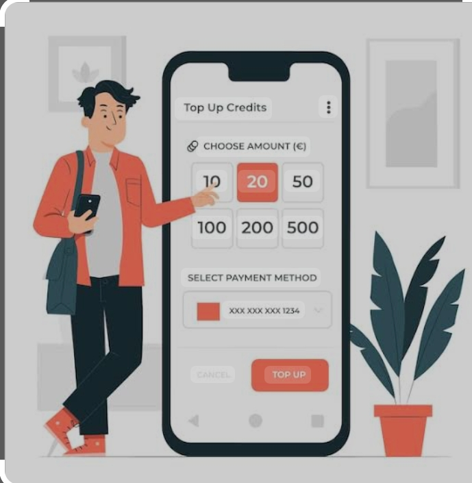
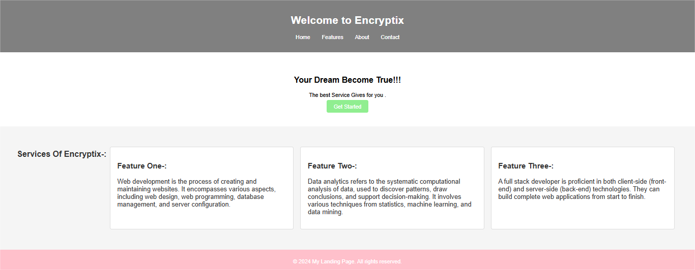
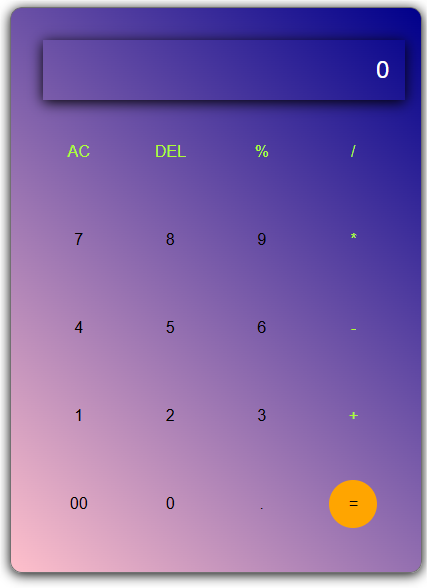
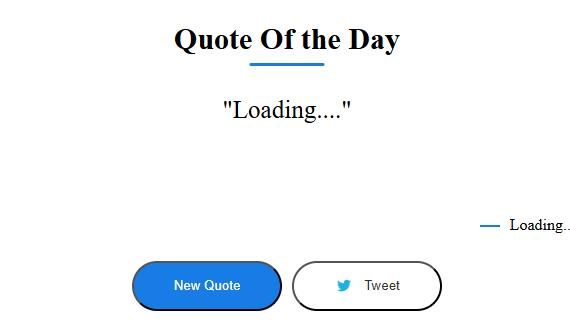

About Me
I have completed my Master of Computer Science in Nashik from Pune University. I have built many web
applications like a Calculator, Quote Generator, Password Generator, landing page, etc.
I am flexible, reliable, and possess excellent timekeeping skills. I am an enthusiastic, self-motivated,
responsible, and hardworking person. I am a mature team worker and adaptable to all challenging
situations. I can work well both in a team environment as well as using my own initiative.
Skills and Experience
Dedicated and passionate about web development, with skills in HTML, CSS, JavaScript, and Java. I have
completed many projects using these technologies.
Objective
To work with an organization where I can learn new skills and increase my abilities for both
organizational goals and personal growth.
Education
10th:Pachora
12th:Pachora
BSC Computer Science:NMU
MSC Computer Science:PuneUniversity
Skills-:
Front-End
- HTML
- CSS
- JavaScript
- React.js
- Node.js
Back-End
- Java
- Python
- Spring
- Spring Boot
- SQL
- Hibernate
Soft Skills
- Communication
- Adaptability
- Problem-Solving
- Teamwork
Experience
Locktrust TV
- Understanding of database structure, algorithms, and processes
- Familiar with database management and design
- Good communication and management skills
- Ability to adapt to new technologies, concepts, and approaches quickly
- Problem-solving and analytical skills
- Must have a learning attitude and improvement mindset
- Knowledge of non-functional aspects such as security, automation, testing, performance, and
optimization
- Leadership and resource management skills
GamakaAI
- Build highly responsive web applications with engaging user experience
- Design client-side and server-side architecture
- Write production-ready code for both front-end and back-end systems
- Develop user-friendly web front ends based on visual designs and branding guidelines
- Conduct thorough testing of developed applications and fix identified bugs
- Create documentation for applications developed
Encryptix
- Created web applications like Calculator, Landing Page, Portfolio, etc.
Projects
Mobile Top-Up
A mobile top-up or recharge is the process of adding balance to a prepaid phone number. This balance
can be used to make calls, access the internet, and send text messages, depending on the
subscription with their telecom provider.

Landing Page
Landing pages are designed to convert visitors into leads or customers by capturing their
information
in exchange for something of value.

Calculator
A calculator is a device that performs arithmetic operations on numbers. Basic calculators can do
addition, subtraction, multiplication, and division.

Quote Generator
A quote generator is an online tool that helps businesses create professional and customized quotes.
